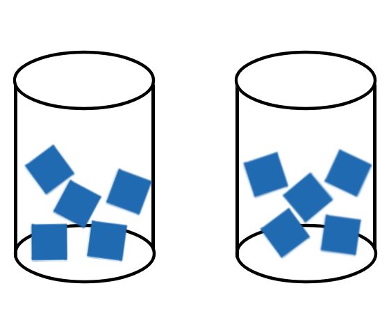

__ __ _ _ _ ___ ___ _ _ __ __ _ _ ___ ___
\ \ / /| |_ | || | | \ ___ ___ ___ / __| __ _ | || |_ | \/ | ___ | || |_ |_ _| __ ___ |__ \
\ \/\/ / | \ \_. | | |) |/ _ \/ -_)(_-/ \__ \/ _` || || _| | |\/| |/ -_)| || _| | | / _|/ -_) /_/
\_/\_/ |_||_| |__/ |___/ \___/\___|/__/ |___/\__/_||_| \__| |_| |_|\___||_| \__| |___|\__|\___| (_)
Why Does Salt Melt Ice?
If you live somewhere where it snows and gets icy, then you probably have sprinkled salt on the sidewalks to keep it from getting icy and help melt any existing ice. But how does this work? For those in a hurry, or already familiar with chemical reactions and thermodynamics, there is a TLDR at the end, otherwise it is worth it to continue reading. But before we get into the explanation, let's perform a short experiment that you can follow along at home. All you need is a few cups, perferably transparent and glass, some salt, and some ice. Below are the procedures we take and a small drawing. On the left there is a glass without salt, and on the right there is salt.

- Add a generous amount of ice to both glasses
- Add salt to one of the glasses and be sure to take note which is which!
- Wait
- Keep waiting...
After waiting some time, you should notice that some condensation (frost if you waited long enough) forms on the glass with the salt in it. This implies that the salt glass is colder. But hold on. Shouldn't the salt be melting the ice? And doesn't this imply that it is heating up in some way? If you hold an ice cube in your hand, the heat from your hand melts the ice. Ok, so maybe the ice didn't melt and the salt kept the ice cold. Go ahead and find two more glasses. Now pour any liquid content from the two original glasses separately into new the new ones. You will see that, indeed there is more water from the glass with salt. Therefore, more ice has melted from the salt glass. So then why is it now colder? What's going on here? Doesn't salt melt the ice? Sure there is more water in the salted glass, so there probably is less ice in the end, but why is the temperature much colder? There are several pieces that go into answering this.
What is actually happening is that, the salt isn't melting the ice in the way we would normally think of melting. The salt isn't actually heating up the ice to melt it, otherwise our salted glass wouldn't be so much colder.
Chemical equilibrium
First we must discuss reversibility of a chemical reaction and we begin with irreversible reactions. Consider the burning of wood. After it is burnt, the ash and leftovers don't turn back into wood so this combustion reaction is irreversible. But some reactions can occur in reverse, unlike the burning of wood. Now imagine you have a clear glass of boiling water and you put a cap on it so that the vapor cannot escape. After some time you will see some water forming on the sides of the glass. This is because the evaporation of water is reversible. So at anytime, there is water turning into vapor and vapor turning back into water. So some of that vapor near the glass is turning back into water which then sticks onto the glass. Chemical equilibrium is thus when the forward and backwards reactions are happening at the same speed. So the same amount of water is turning into vapor as vapor is turning into water. They don't have to be at the same speed though. If you have ever eaten hot pot, you know that after some time the water left is less than when you started and you have to refill the water content. This is because the evaporation happens faster than the vapor turning into water. Also this happens because of the food soaking up that delicious soup.
To show that a reaction can proceed in reverse, we use \(\leftrightharpoons\). So for example
\[R \leftrightharpoons P\]
where R is the reactants and P is the product. So R can react into P, and P can react into R.
Enthalpy (H)
We won't give an actual definition of enthalpy, but we can loosely think of it as the energy of the system. What we are actually interested in is the difference of entropy between the reactants and products, \(\Delta H\). For the reactions we are looking at here, we can say that
\[\Delta H = Q\]
where Q is heat that enters our system. If heat enters the system, \(Q>0\) and \(\Delta H>0\), we call this reaction endothermic and it looks like
\[R + Q \leftrightharpoons P\]
If heat leaves the system, then \(Q < 0\) and \(\Delta H < 0\), we call this reaction exothermic and it looks like
\[R \leftrightharpoons P + Q\]
Entropy (S)
Entropy is a bit tricky. A common way to describe entropy is as disorder or chaos. This should be sufficient as an introduction. Another way we can think about entropy is the "dirty room." So imagine your room after not cleaning it for a while. Quite a mess isn't it. But if you were to clean it, or "order" it, then it costs you energy and effort to do it. What we will be dealing with later is entropy of a chemical system. Consider the molecules of the different states. As a solid, the molecules don't move around as much and are generally pretty ordered (especially if it is like a crystal lattice). So solids have the least amount of entropy. Gases have the most entropy since the molecules and move more freely and can mix around. Liquid is somewhere in between. So
\[S_{solid} < S_{liquid} < S_{gas}\]
Also, if we mix different substances together, then the entropy increases. For example we can think of paint. Say if we have a red tub of paint and a blue tub of paint. Individually, the colors are constant and not so "disordered." But if we start adding one to the other, the colors start mixing and you get splotches of blue and red, making it more disordered and chaotic than before.
Gibbs Free Energy (G)
The next part of the puzzle is Gibbs Free Energy, which is a type of thermodynamic potential. For those unaware of potential, let's think of something more familiar, graviational potential. If you put a tissue box on the ground, it can't really do anything and will just stay there if you leave it alone. But if you hold the tissue box up higher, the tissue box has the "potential" to do something, i.e. fall down to the ground. Gibbs free energy is similar and in our case, it relates to the chemical reaction. Again, let's think about the difference between reactants and products, \(\Delta G\). At chemical equilibrium, since forwards and backwards are the same, the potential is the same both ways, so \(\Delta G = 0\). There is also an equation that describes this quantity. We won't delve too deeply into the derivation and just take it as a given.
\[\Delta G = T\Delta S - P\Delta V\]
Here \(T\) is the temperature, \(\Delta S\) is the difference in entropy, \(P\) is the pressure, and \(\Delta V\) is the difference in volume. The interesting part is the term containing temperature and entropy so keep that in mind for later. Furthermore, a system wants to minimize its potential, so for a chemical reaction, it wants to achieve \(\Delta G=0\) since it is more stable.
Putting it together
Now we should have enough to finally explain the melting of ice. The chemical equation we use to describe this process is
\[H_2O_{(s)} + Q \rightleftharpoons H_2O_{(l)}\]
Notice that for ice to become water, it requires heat. So the forward reaction is endothermic while the backwards reaction is exothermic. Since we have an equilibrium, there should be some water along the ice. This is part of why ice is wet, due to that water. When we add salt, it dissolves into the water layer. You can try adding salt to some water, or you can add some sugar into your coffee since it is the same principle. Since the water layer now also contains the salt, the entropy has increased. This increases the difference in entropy. Remember that at equilibrium (freezing point)
\[\Delta G = 0 = T\Delta S - P\Delta V\]
If we increase \(\Delta S\), then the temperature at the equilibrium has to decrease. So the freezing temperature is now much colder, this means that less water is turning into ice while more ice is turning into water. This makes it appear that the ice is melting! But now we also have to address why the system gets colder. Remember that the system wants to approach the equilibrium, which now has a lower temperature than before. Since the melting of ice needs heat and is now happening at a faster rate then the remaking of ice, the heat of the system is used to become water. This makes the system colder as it tries to get to equilibrium.
TLDR; For those in a hurry
There is a thin layer of water around ice. At equilibrium, there is an equal amount of ice melting into water as there is water freezing into ice. When we add salt, it is mixed into that layer of water. This increases the entropy of the system, this in turn reduces the equilibrum (freezing) temperature. Since the freezing temperature is lower, we see more of the ice melting and less water refreezing. Over time this results in the "melting" of the ice. Similarly, since the reaction of ice melting is exothermic, the environment heats up while the system becomes colder and colder.